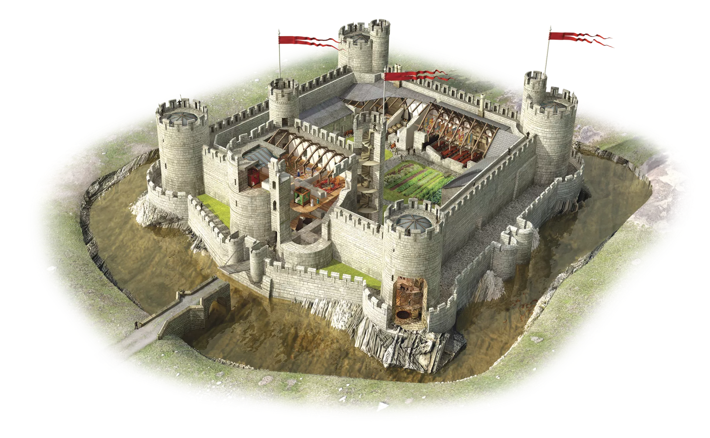

Hello my name is lord Kutter the greatest lord of them all. I am the one who will make us flourish in this world
3 examples of protection that were built into the castle: 1. Wall 2. Mote 3. Drawbridge 5 parts to the castle - label each part: 1. Tower 2.Thone room 3.bedroom 4. Dining hall 5.theater Evidence of the role that religion played in the manor: 2 examples of the role that serfs played on the manor: 1.peasant 2. Lord 2 examples of food sources that might have been found on the manor: 1.bread 2.potatos An illustration of the 3 field system: 2 geographic features that might be found on the manor: 1.fartile soil 2.lots of stone 4 examples of domesticated animals that might be found on the manor: 1.cow 2.sheep 3.pig 4.horse An example of housing that a serf might have occupied: 3 miscellaneous details to enrich you scene: 1.flags 2.windows 3.in side views